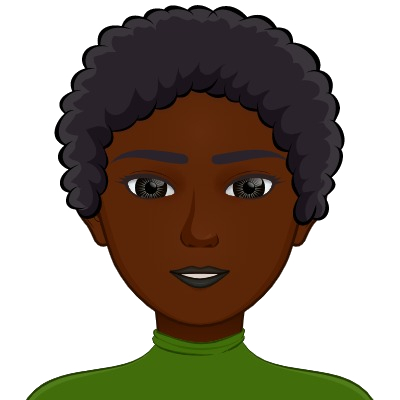
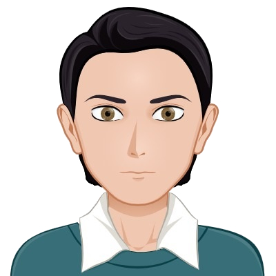

Our origin stories begin all over the world. Each culture holds its own ideals and norms for the ways its citizens behave and communicate in different settings. Based on our unique backgrounds, our styles of communication have specific differences and led to interesting virtual interactions, where we all had to be mindful of the differences in communication etiquette. We saw these, many times subtle, differences throughout our virtual interactions. Added to this is the fact that many contributors in our group have temporarily lived in other countries as well, which diversifies their communication etiquette even further. The way we interact with others is supremely influenced by not only the area we are born but the regions we further develop through educational and work experiences.
Born and raised in central Indiana. Pursuing a Masters in Library and Information Science with a focus on Academic Librarianship in order to work as an Education Subject Librarian in a University.
About Central Indiana, USA

Originally from Kenya but currently residing in Helsinki Finland. Has a Bachelor’s in nursing and is currently studying IT with the aim of getting into health informatics and becoming a health informatics specialist.
About Karatina, Kenya

Born in the USSR, raised all over the place, from Siberia to Amsterdam and Helsinki, which I now call home. At the moment perusing a new career, because I got tired of the old one, a father of two, with a dream of getting a better education.
About USSR
Originally from Chennai, India but is now a resident of the United States of America and calls Indiana home. Has a Master's in Computer Engineering and currently pursuing a Master's in Library Information Science and hopes to be a Systems Librarian.
About Chennai, India
Born in Helsinki, Finland. Graduated with a Bachelor’s Degree in Healthcare with a specialization in dental hygiene, and now pursuing another Bachelor’s Degree in Information Technology. In the future, sees herself working in a software engineering team combining her interest towards management and eye for design.
About Helsinki, Finland
Finland - language, culture, customs and etiquette. Commisceo Global Consulting Ltd. (n.d.). https://www.commisceo-global.com/resources/country-guides/finland-guide#:~:text=Finns%20believe%20there%20is%20a,Interrupting%20is%20rude.
Indian Culture, Customs, Business Practices and Etiquette. Commisceo Global Consulting Ltd. (n.d.). https://www.commisceo-global.com/resources/country-guides/india-guide.
Pier. (n.d.). Kenyan Culture - Communication. Cultural Atlas. https://culturalatlas.sbs.com.au/kenyan-culture/kenyan-culture-communication.
Pier. (n.d.). Russian Culture - Communication. Cultural Atlas. https://culturalatlas.sbs.com.au/russian-culture/russian-culture-communication.
American Culture, Customs & Etiquette. Commisceo Global Consulting Ltd. (n.d.). https://www.commisceo-global.com/resources/country-guides/usa-guide#:~:text=Americans%20do%20not%20tend%20to,common%20within%20the%20community%20itself.